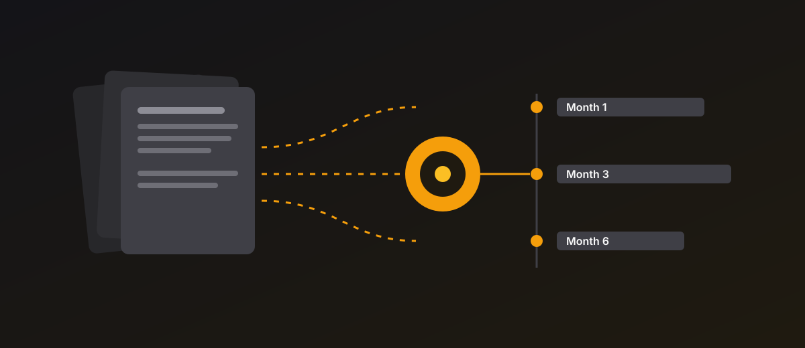
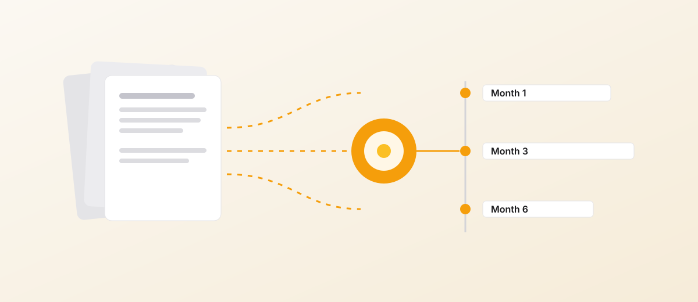
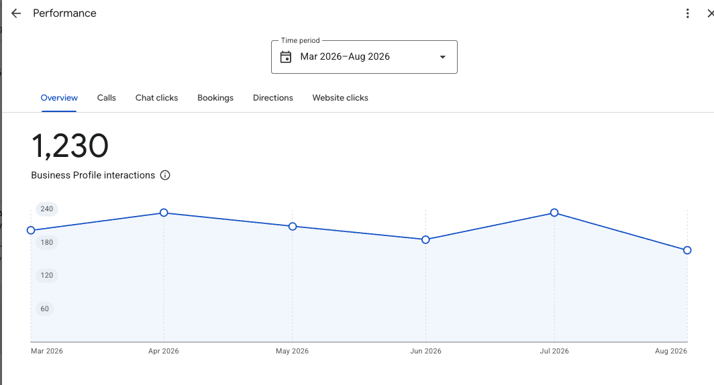
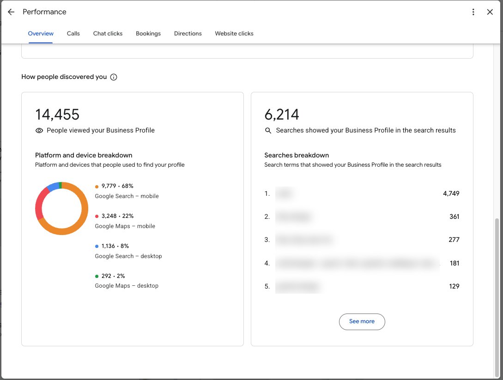
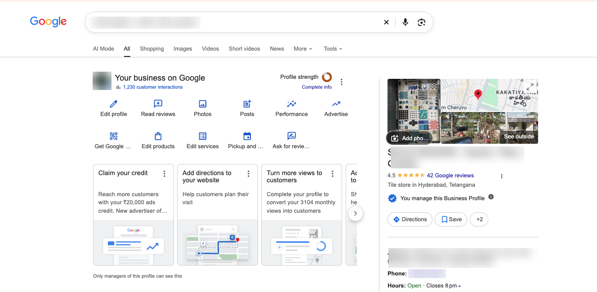

For hospitality businesses that depend on being found before the season starts
Details anonymized. Client name and identifying specifics withheld.Boutique Wildlife Resort · Central India · 6 weeks, ongoing
A small resort a short walk from the gate of one of India's best-known tiger reserves had the location, rooms and food that safari travellers look for, but travellers had no easy way to find it. The website was a single page with no safari information, no distances and no prices. There were no booking-site listings. And searching for the resort's name brought up unrelated properties with the same name in other states.
Before touching the design, we audited the competing resorts around the same reserve, page by page, to see what they rank for and what they miss. Then we ran Surface Demand Radar, the market-intelligence tool we built, across the searches travellers actually make. It found search terms that no resort in the area was competing for, and we later built the Google Ads campaign on them.
Over six weeks we rebuilt the website from one page to a full site with rooms, dining, a safari guide, FAQs and a travel blog, structured so Google and AI answer engines can understand it. We also cleaned up conflicting business details across the web, launched the resort on two major booking platforms, and set up full tracking before the first ad ran. After that we built a Google Business Profile posting calendar, made the ad creatives and reels ourselves, and set up a simple lead sheet that follows each enquiry from ad click to quotation to booking. Every enquiry gets its own personalised quotation.
The first result came before any money was spent on ads: a large group found the resort through the new website and booked the entire property. Once the ads went live, enquiries started coming in on the first day and have kept coming since, and the opening weekend of the season sold out.
A competitor audit and demand mapping came before any design or ad decision.
Analytics, tag manager, Meta Pixel and Conversions API were live before the first campaign.
Every enquiry is logged from first click to confirmed booking, so each result can be checked against a real record.
Enquiries from day one
The ads brought in enquiries within 24 hours of going live, and almost every enquiry since has come from a campaign we set up.
Whole-property bookings
Two groups booked the entire resort directly through the new website, with no booking-site commission paid.
Opening weekend sold out
The first weekend of the safari season filled up, with more enquiries for those dates than there were rooms.
Every booking traceable
Every confirmed booking so far came through a channel we built: the website or one of the two booking-platform listings.
Small launch test
The launch test budget was less than the price of one night's stay, and it showed real demand within a day.
Group demand
Roughly 1 in 10 enquiries is a group of ten or more, a segment now handled with its own group quotations.
Website BuildStructured DataGoogle Business ProfileBooking PlatformsMeta Pixel + CAPIMeta & Google AdsAd Creatives & ReelsQuotation DesignLead Tracking
Audited the old site and the competition: page by page, against the resorts travellers compare it with, to find what was missing and what could be won
Mapped demand with our own tool: Surface Demand Radar showed which searches had interest and almost no competition
Rebuilt the website: a full site with rooms, dining, a safari guide, FAQs, a privacy page and a travel blog, each page set up for search and AI answer engines
Fixed the listing basics: one consistent name, address and phone number everywhere, and the right business category on every listing
Launched on booking platforms: two major platforms live before the season opened, with a simple routine to prevent double bookings
Set up tracking before ads: analytics, tag manager, Meta Pixel and Conversions API, so every campaign could be measured from day one
Built a Google Business Profile calendar: several weeks of posts planned in advance, using the resort's own photos and guest videos
Launched Meta and Google ads: creatives and reels made in-house, with the Google campaign built on the low-competition searches found earlier
Logged every enquiry: one sheet that follows each lead from first message to quotation to booking, with a personalised quotation for every enquiry


Content Intelligence Engine
For agencies and freelancers running content for multiple clients
Live
Knowing what to write next is harder than writing it. We built a tool that reads everything a client's competitors have recently published, studies it, and hands back a content roadmap: what to write, in what order, for the next 1, 3, or 6 months. It's running on a real client, not a demo, producing a roadmap they execute.
Kills the blank page. Research that took 2–3 hours per client now runs in minutes.
Every client saved as a profile, rules and all: "never mention price" stored once, respected in every output.
Shows its homework. Every idea is grounded in real articles competitors actually published, plus the gaps nobody's writing yet.
Enter the client and competitors: Client profile, hard rules, and 3–8 competitor URLs saved once, reused on every run
Collect what competitors published: The tool fetches recent articles from every competitor site, trying different methods until one works: clean feeds, scraped pages, or a fallback route when a site doesn't cooperate
Analyse for themes and gaps: Every article gets studied for what's being said, and just as important, what nobody's saying yet
Generate the roadmap: A sequenced content plan for the next 1, 3, or 6 months, every idea traceable back to a real published article
Remembers the brand: Rules like "never mention price" are stored once on the client profile and respected in every future output
Switch clients in one click: Each client is a saved profile, no re-entering context, no starting from scratch


Premium Studio of Surfaces Brand Growth
For local businesses that live or die on being found, being trusted, and being fast to reply
Details anonymized. Client name and identifying specifics withheld by agreement.Premium Surfaces (Tiles, Quartz, Marble) · Hyderabad, India · 2 months, ongoing
A premium design and surfaces studio in Hyderabad already had steady inbound interest through Google. People were finding them and calling. What was missing was proof: nothing online showed they were the specification-grade expert serious architects and designers trust, not just another tile shop.
We didn't take that gap on faith. We checked it ourselves. Instagram against comparable local studios showed reels pulling a fraction of the views similar accounts got with similar content. Their Google Business Profile carried a fraction of the reviews some direct competitors carried. And a market-intelligence pass across search, Maps, and AI answer engines, run with a tool we built for exactly this, showed no local dealer in the category, this studio included, had a single featured snippet or AI citation, even with competitors running near-perfect ratings and hundreds of reviews. Not a hunch. A mapped gap.
We built five connected systems off that gap: WhatsApp, so every enquiry gets a fast, verified reply; a founder LinkedIn presence giving his decade of expertise a public voice; a Reels-first creative system built around why the old posts weren't landing; Google Business Profile content built on real competitor and review data instead of guesses; and a walk-in intake form. That last one came after we realised sales from this activity couldn't be confirmed, because nothing at the showroom counter was logging them, so that exact gap doesn't repeat.
Two months in: WhatsApp, founder LinkedIn, and Google Business Profile are live and producing measurable activity. A full paid-media plan (channel mix, cost-per-lead benchmarks, month-by-month projections) is built and ready, pending budget sign-off. A 1,000+-contact architect and developer relationship database is built with a consent-first structure: nothing goes out until the client approves who, what, and how often.
Every enquiry now gets a fast reply from a verified, blue-tick WhatsApp number, so it reads as a professional studio, not a random shop
The founder's decade of hands-on expertise now has a public voice on LinkedIn, with consistent posting for two months that's grown his following by roughly half
Audited Instagram against comparable local studios, found reels underperforming by a wide margin, and built a Reels-first creative system (shot list, content pillars, KPIs) to close that gap
Google Business Profile content shifted from guesswork to evidence, with calls emerging as the strongest-converting contact method, enough to shift this month's content towards driving calls specifically
When sales from that activity couldn't be confirmed because nothing was logged, fixed the gap at the source: a live walk-in intake form now records every visit's project type, budget, timeline, and referral source
Google Business Profile: interactions, two months

Google Business Profile: how people discovered the studio

Google Business Profile listing

The discovery data behind that activity: tens of thousands of profile views and search impressions, split roughly two-thirds mobile search and the rest Google Maps, with branded search terms making up most of the volume, exactly what you'd expect once local content starts working.
Call conversion
Calls became the strongest-converting contact method on Google Business Profile, with roughly 1 in 10 to 1 in 5 converting into a confirmed walk-in sale.
LinkedIn growth
The founder's LinkedIn following grew by roughly 60% in under three months of consistent, evidence-backed posting.
5 systems connected
WhatsApp, founder LinkedIn, Reels, Google Business Profile, and a new walk-in intake form, all working as one system rather than five separate tools.
30+ posts written
30+ LinkedIn posts written and published in two months, each tagged for a specific search or AI-visibility job.
6-month roadmap
A six-month content system mapped and written in advance, so execution never stalls waiting on ideas.
WhatsApp Business APILinkedIn GhostwritingLocal SEOAEO / GEOReels StrategyGoogle Business Profile
WhatsApp first: WATI integration, blue-tick verification, and an AI response bot, built and demoed so it's ready the moment the client wants it live
Started with the founder, not the brand: LinkedIn posts in his own voice, because people trust a person before a company page
Audited Instagram against comparable local studios: found reels underperforming similar accounts by a wide margin, then built a Reels-first creative brief, shot list, content pillars, and monthly targets to close the gap
Ran a market-intelligence pass across search, Maps, and AI answer engines before writing a single Google Business Profile post, grounding every content angle in real competitor and buyer-review data instead of guesswork
Watched which contact method actually converted once that content went live, and shifted the call-to-action towards calls once the data showed they qualified better than chats
Fixed the one gap that made results hard to prove: a walk-in intake form at the showroom counter, so future activity can be traced to an actual outcome, not a verbal confirmation
Mapped a six-month content system before writing a single post: every platform assigned a specific role, so nothing gets duplicated for no reason
Wrote the actual content in advance, not just a calendar of topics, so execution never stalls waiting on ideas
Tagged every piece for its actual job: local search, national search, or getting cited by AI tools like ChatGPT and Perplexity
Now executing month by month, with a content team producing against the plan, so visibility keeps compounding instead of resetting every time a campaign ends


Surface Demand Radar
For surface and material showrooms deciding what to spend on before they spend it
Self-initiated. Already proven on a real market.Market Intelligence · Any City, Any Category · First edition: Hyderabad, Premium Surfaces
Working on the Premium Studio of Surfaces project, we hit a wall: the studio's team could tell us GMB activity was converting into sales, but nothing at the counter was logging it, so we couldn't confirm exactly how much. Rather than build another tool that depends on a client's staff logging data (that had already failed once), we built one that needs none of it.
Surface Demand Radar takes a city and a category, nothing hardcoded, and shows a showroom what buyers already search, see on Maps, praise, complain about, and whether AI answer engines like ChatGPT, Perplexity, and Gemini even mention them or their competitors, before a rupee gets spent on ads. Every finding is tagged observed, inferred, or unknown against its source, so a claim never outruns its evidence.
The first real edition ran on Hyderabad's premium surfaces market, the same market the studio above competes in. Its findings, real competitor review complaints and unclaimed search territory, went straight into that studio's Google Business Profile content and produced a visible, same-week jump in profile activity. Broader release, self-serve requests and a paid tier, is the next phase.
100% public data: no client account access, no CRM, no dependence on anyone logging a lead correctly
Built on the same collector → analyzer → report pipeline already proven on two other tools, not reinvented from scratch
Checks whether AI answer engines even mention a business, not just where it ranks on Google, a channel almost no local competitor is contesting yet
Every claim is evidence-tagged: observed fact, inference, or acknowledged unknown, so nothing gets published on a hunch
Its first real output already changed a real showroom's content and moved a real number, before the product itself was ever sold
Search and Maps mapped
The first edition mapped 20 competitors and checked search visibility across 7 category keywords in a single city market.
AI-answer visibility checked
Every edition checks whether ChatGPT, Perplexity, and Gemini actually mention a business, not just where it ranks on Google.
Content gaps found
The first edition surfaced 5 evidence-backed content gaps, each traced back to a real, cited data point, not a guess.
A proven pipeline, reused
The same collector, analyzer, report pipeline already running in two other tools, not rebuilt from scratch for this one.
Takes a city and category as input: nothing hardcoded, so any showroom or distributor in any city can run their own edition
Collects search visibility through paid search APIs, never raw scraping of Google: who ranks, local-pack presence, and featured snippets for every keyword in the category
Pulls Maps and Google Business Profile competitor data through the official Google Places API: rating, review count, and real review text for every competitor in the market
Checks whether the category is even visible to AI answer engines by calling OpenAI, Perplexity, and Gemini directly and logging which brands they actually name
Cross-references competitor blog and directory content against the keyword list to find what nobody has written yet
Hands all of it to a Claude-powered analyzer that separates observed fact from inference from unknown, and calls its own tools to fill a gap rather than writing around it
Ships a single, self-contained report with ready-to-use content angles, each one traceable back to a real, cited data point